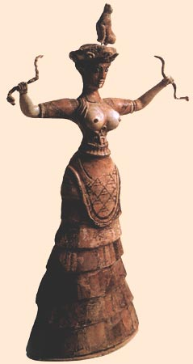
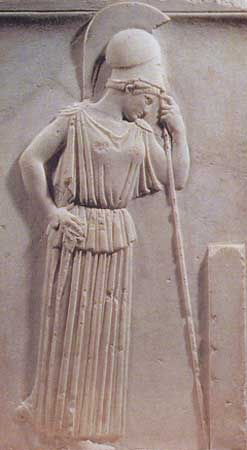

|
Корсет
Древнего мира
|
||
|
 |
Ранние
цивилизации Ассирии, Крита
и Египта. Впервые
женщины облачились в некое подобие корсетов много тысячелетий назад. Их
изображения украшали глиняную посуду. Считается, что корсеты были как-то
связаны с культами Солнца и Змеи. Например, на одной из критских ваз учёные-археологи
обнаружили рисунок: женщина в бронзовом корсете который вместо шнуровки перетянут змеями.
Древняя
Греция. Чтобы придать стройность фигуре и утянуть грудь,
женщины пеленали корпус в холст и лишь потом
драпировались в различные ткани. Для поддержания
груди к одежде пришивали
полоску ткани или мягкой кожи, утягивавшую грудь.
Рим.
Женщины носили широкие пояса со шнуровкой,
заимствованные у германских варваров при помощи которых подчеркивали
грудь.
|
 |
| Богиня со змеями. Статуэтка из Кносса. XVII в. до н.э. | Афина опирающаяся на копье. Рельеф. 460 г. до н. э. Музей Акрополя. Афины | |
|
Вопросы
для самопроверки
|
| 1. Каким образом
женщины Крита придавали своей фигуре желаемый силуэт? 2. Каким образом женщины Древней Греции придавали своей фигуре желаемый силуэт? 3. Каким образом женщины Рима придавали своей фигуре желаемый силуэт? |